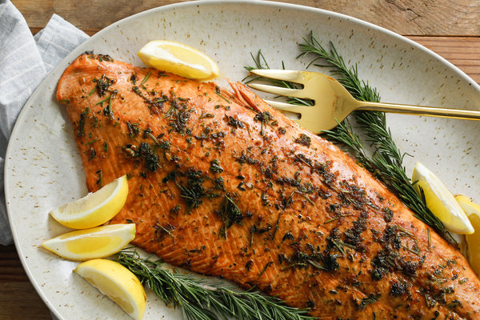

<!-- We don't need a full layout in this file because this page will be parsed with Ajax. -->

<div class="pages">
    <div data-page="about" class="page">
        <!-- Top Navbar -->
        <div class="navbar">
                <div class="navbar-inner">
                        <div class="left">
                                <a class="link back">
                                    <i class="icon icon-back"></i>
                                    <span class="ios-only">Back</span>
                                </a>
                            </div>
                    <div class="title">Salmon</div>
                </div>
            </div>

        <div class="page-content">
            <div class="container">
                <div class="content-block">
                    <div class="block">
                        
                        <p>Salmon is a popular food. Classified as an oily fish, salmon is high in protein, omega-3 fatty acids, and vitamin D, and is therefore considered to be healthy.. Salmon is also a source of cholesterol, with a range of 23–214 mg/100 g depending on the species.</p>
                    </div>
               </div>
           </div>
       </div>
    </div>
</div>
